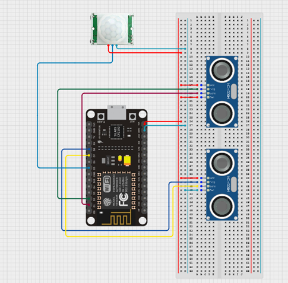

Experimental racing prototype controlled using real-world hardware sensors, exploring intuitive physical input and hardware-to-game communication.
View on Itch.ioUltra Drive is an experimental racing prototype where traditional controllers are replaced by physical motion sensors. Steering, drifting, and boosting are driven by real-world hand movement, emphasizing embodied interaction over mechanical complexity or racing realism.
Hand Movement → Sensor Distance Reading → ESP8266 Processing → Serial Communication → Unreal Engine Input Mapping → Vehicle Response
#define trigPin1 D2
#define echoPin1 D1
#define trigPin2 D8
#define echoPin2 D7
#define pirPin D5
void setup() {
Serial.begin(9600);
pinMode(trigPin1, OUTPUT);
pinMode(echoPin1, INPUT);
pinMode(trigPin2, OUTPUT);
pinMode(echoPin2, INPUT);
pinMode(pirPin, INPUT);
}
long readDistance(int trigPin, int echoPin) {
digitalWrite(trigPin, LOW);
delayMicroseconds(2);
digitalWrite(trigPin, HIGH);
delayMicroseconds(10);
digitalWrite(trigPin, LOW);
return pulseIn(echoPin, HIGH) * 0.034 / 2;
}
void loop() {
// PIR reset detection
if (digitalRead(pirPin) == HIGH) {
Serial.println("RESET");
delay(50); // Debounce the PIR trigger
return;
}
// Read ultrasonic distances
long distance1 = readDistance(trigPin1, echoPin1); // Left
long distance2 = readDistance(trigPin2, echoPin2); // Right
// Logic for drifting and normal turns
if (distance1 > 5 && distance1 <= 20 && distance2 > 20) {
Serial.println("LEFT");
} else if (distance1 <= 5 && distance2 > 20) {
Serial.println("LEFTDRIFT");
} else if (distance2 > 5 && distance2 <= 20 && distance1 > 20) {
Serial.println("RIGHT");
} else if (distance2 <= 5 && distance1 > 20) {
Serial.println("RIGHTDRIFT");
} else {
Serial.println("NONE");
}
delay(50); // Avoid spamming
}
Hardware wiring layout for Ultra Drive showing ESP8266 (NodeMCU), dual ultrasonic sensors for steering input, and a PIR sensor used as a motion-based boost trigger.

Ultrasonic sensors are used to translate hand distance into steering depth, enabling analog-like control without traditional input devices.
Distance thresholds determine layered vehicle responses such as normal steering and drift, allowing expressive control using low-cost sensors.